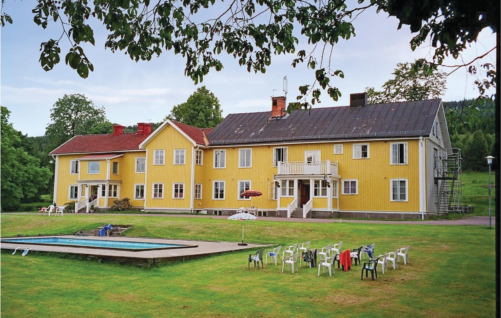

Historisk
Tiden vi glömde
av Johan West
Två generationer under 1900-talets Sverige. En berättelse om mod, tystnad och förlåtelse genom brev och minnen.
249 kr

av Johan West
Två generationer under 1900-talets Sverige. En berättelse om mod, tystnad och förlåtelse genom brev och minnen.
av Nora Dahl
Korta berättelser om möten på caféer där varje kopp blir en chans till förändring. Varm, lättläst och hoppfull.
av Elias Holm
En ung forskare hittar en hemlig rymdstation som gömmer sanningen om mänsklighetens ursprung.
av Sara Ekström
Ett djupt porträtt av en kvinna som försöker minnas vem hon är efter en olycka – en resa genom drömmar och minnen.
av Lina Berg
En journalist återvänder till sin barndomsby och dras in i ett nät av försvinnanden och gamla hemligheter.